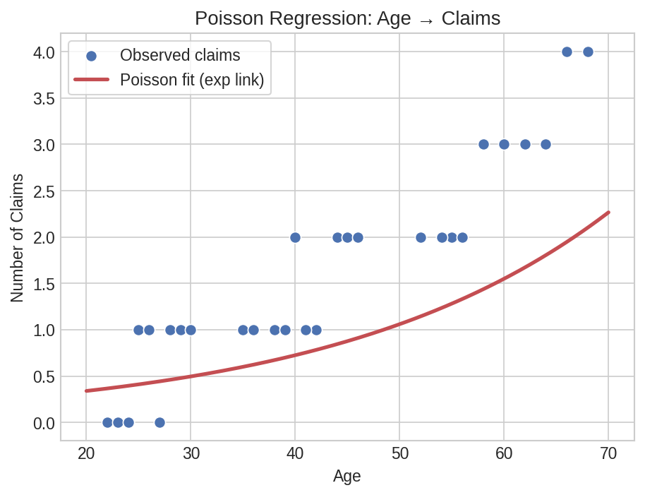
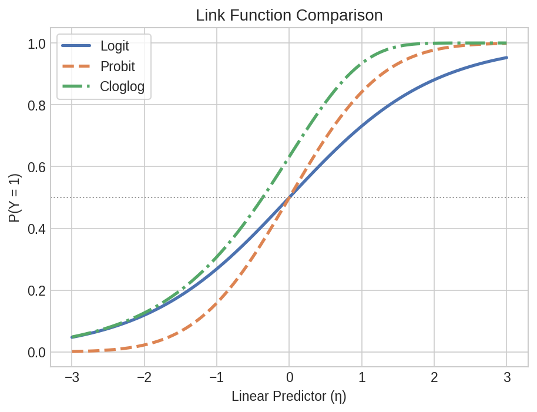

Generalized Linear Models¶
Hospital admissions, insurance claims, and customer churn — real outcomes are often counts, binary flags, or skewed amounts rather than continuous normals. GLMs handle all of these by choosing the right link function and variance structure. This page walks through Poisson, Negative Binomial, Tweedie, Probit, and Complementary log-log models using polars-statistics.
Setup¶
import polars as pl
import polars_statistics as ps
# Insurance claims: age predicts number of claims (Poisson count data)
claims_df = pl.DataFrame({
"claims": [0.0, 0.0, 1.0, 0.0, 1.0, 0.0, 1.0, 0.0, 1.0, 1.0,
1.0, 1.0, 2.0, 1.0, 1.0, 2.0, 1.0, 2.0, 1.0, 2.0,
2.0, 2.0, 3.0, 2.0, 3.0, 2.0, 3.0, 3.0, 4.0, 4.0],
"age": [22.0, 24.0, 25.0, 23.0, 26.0, 27.0, 28.0, 24.0, 29.0, 30.0,
35.0, 38.0, 40.0, 36.0, 42.0, 44.0, 39.0, 45.0, 41.0, 46.0,
52.0, 55.0, 58.0, 54.0, 60.0, 56.0, 62.0, 64.0, 66.0, 68.0],
})
# Insurance claim amounts (positive continuous with zeros — Tweedie)
tweedie_df = pl.DataFrame({
"amount": [0.0, 0.0, 120.5, 0.0, 85.0, 0.0, 200.0, 0.0, 150.0, 95.0,
110.0, 180.0, 250.0, 130.0, 170.0, 300.0, 140.0, 220.0, 160.0, 280.0,
200.0, 350.0, 400.0, 250.0, 450.0, 300.0, 500.0, 380.0, 550.0, 600.0],
"age": [22.0, 24.0, 25.0, 23.0, 26.0, 27.0, 28.0, 24.0, 29.0, 30.0,
35.0, 38.0, 40.0, 36.0, 42.0, 44.0, 39.0, 45.0, 41.0, 46.0,
52.0, 55.0, 58.0, 54.0, 60.0, 56.0, 62.0, 64.0, 66.0, 68.0],
})
# Customer churn: binary outcome (Probit / Cloglog)
churn_df = pl.DataFrame({
"churned": [0.0, 0.0, 0.0, 0.0, 0.0, 0.0, 0.0, 0.0, 0.0, 0.0,
0.0, 0.0, 0.0, 0.0, 0.0, 0.0, 0.0, 1.0, 1.0, 0.0,
0.0, 0.0, 0.0, 1.0, 0.0, 1.0, 0.0, 1.0, 0.0, 1.0,
1.0, 1.0, 0.0, 1.0, 1.0, 0.0, 1.0, 1.0, 1.0, 1.0,
1.0, 1.0, 1.0, 1.0, 1.0, 1.0, 1.0, 1.0, 1.0, 1.0],
"tenure": [48.0, 60.0, 36.0, 52.0, 40.0, 55.0, 44.0, 50.0, 38.0, 42.0,
30.0, 28.0, 32.0, 26.0, 34.0, 29.0, 31.0, 22.0, 20.0, 35.0,
24.0, 27.0, 33.0, 18.0, 25.0, 15.0, 21.0, 12.0, 28.0, 10.0,
8.0, 6.0, 16.0, 4.0, 7.0, 14.0, 3.0, 5.0, 9.0, 2.0,
1.0, 3.0, 2.0, 4.0, 1.0, 2.0, 3.0, 1.0, 2.0, 1.0],
"charges": [45.0, 42.0, 50.0, 40.0, 48.0, 38.0, 52.0, 44.0, 55.0, 46.0,
58.0, 60.0, 56.0, 62.0, 54.0, 64.0, 59.0, 68.0, 70.0, 53.0,
66.0, 63.0, 51.0, 72.0, 65.0, 76.0, 69.0, 80.0, 61.0, 84.0,
88.0, 92.0, 78.0, 96.0, 90.0, 82.0, 98.0, 94.0, 86.0, 100.0,
105.0, 102.0, 108.0, 99.0, 110.0, 104.0, 101.0, 112.0, 106.0, 115.0],
})
Count Data — Poisson Regression¶
Poisson regression models count outcomes where the variance equals the mean. Here, we predict the number of insurance claims from policyholder age:
result = claims_df.select(
ps.poisson("claims", "age").alias("model")
)
model = result["model"][0]
print(f"Intercept: {model['intercept']:.4f}")
print(f"Coefficients: {model['coefficients']}")
print(f"AIC: {model['aic']:.2f}")
print(f"N: {model['n']}")
Expected output:
Coefficient Summary¶
poisson_coefs = (
claims_df.select(
ps.poisson_summary("claims", "age").alias("coef")
)
.explode("coef")
.unnest("coef")
)
print(poisson_coefs)
# ┌───────────┬───────────┬───────────┬───────────┬──────────┐
# │ term ┆ estimate ┆ std_error ┆ statistic ┆ p_value │
# ╞═══════════╪═══════════╪═══════════╪═══════════╪══════════╡
# │ intercept ┆ -1.7597 ┆ 0.5766 ┆ -3.0517 ┆ 0.002274 │
# │ x1 ┆ 0.0472 ┆ 0.0108 ┆ 4.3518 ┆ 0.000014 │
# └───────────┴───────────┴───────────┴───────────┴──────────┘
Predictions¶
poisson_preds = (
claims_df.with_columns(
ps.poisson_predict("claims", "age").alias("pred")
)
.unnest("pred")
)
print(poisson_preds.select("claims", "age", "poisson_prediction").head(5))
# ┌────────┬──────┬────────────────────┐
# │ claims ┆ age ┆ poisson_prediction │
# ╞════════╪══════╪════════════════════╡
# │ 0.0 ┆ 22.0 ┆ 0.4856 │
# │ 0.0 ┆ 24.0 ┆ 0.5337 │
# │ 1.0 ┆ 25.0 ┆ 0.5594 │
# │ 0.0 ┆ 23.0 ┆ 0.5091 │
# │ 1.0 ┆ 26.0 ┆ 0.5864 │
# └────────┴──────┴────────────────────┘
Formula Syntax¶
The same model using R-style formula notation:
formula_result = claims_df.select(
ps.poisson_formula("claims ~ age").alias("model")
)
model_f = formula_result["model"][0]
print(f"AIC (formula): {model_f['aic']:.2f}")
# Formula summary
formula_coefs = (
claims_df.select(
ps.poisson_formula_summary("claims ~ age").alias("coef")
)
.explode("coef")
.unnest("coef")
)
print(formula_coefs)
# Same coefficient table as above
# Formula predictions
formula_preds = (
claims_df.with_columns(
ps.poisson_formula_predict("claims ~ age").alias("pred")
)
.unnest("pred")
)
print(formula_preds.select("claims", "age", "poisson_prediction").head(5))
# Same predictions as above
Expected output:
Sparsity Check¶
Before fitting count models, check for separation issues in the data:
sparsity = claims_df.select(
ps.check_count_sparsity("claims", "age").alias("check")
)
check = sparsity["check"][0]
print(f"Has separation: {check['has_separation']}")
Expected output:

Plot code
import matplotlib.pyplot as plt
import numpy as np
age = claims_df["age"].to_numpy()
claims = claims_df["claims"].to_numpy()
pred = poisson_preds["poisson_prediction"].to_numpy()
sort_idx = np.argsort(age)
age_sorted = age[sort_idx]
pred_sorted = pred[sort_idx]
fig, ax = plt.subplots(figsize=(7, 4.5))
ax.scatter(age, claims, s=50, color="#4C72B0", edgecolor="white",
label="Observed claims", zorder=3)
ax.plot(age_sorted, pred_sorted, color="#C44E52", lw=2.5,
label="Poisson fit")
ax.set_xlabel("Age")
ax.set_ylabel("Number of Claims")
ax.set_title("Poisson Regression: Claims ~ Age")
ax.legend()
plt.tight_layout()
plt.savefig("glm_poisson_fit.png", dpi=150)
Overdispersed Counts — Negative Binomial¶
When the variance exceeds the mean (overdispersion), the Negative Binomial model adds a dispersion parameter to account for extra variability:
nb_result = claims_df.select(
ps.negative_binomial("claims", "age").alias("model")
)
nb = nb_result["model"][0]
print(f"Intercept: {nb['intercept']:.4f}")
print(f"Coefficients: {nb['coefficients']}")
print(f"AIC: {nb['aic']:.2f}")
Expected output:
Note: Lower AIC than Poisson (5.65 vs 11.82) — the Negative Binomial model accounts for overdispersion.
Coefficient Summary¶
nb_coefs = (
claims_df.select(
ps.negative_binomial_summary("claims", "age").alias("coef")
)
.explode("coef")
.unnest("coef")
)
print(nb_coefs)
# ┌───────────┬───────────┬───────────┬───────────┬──────────┐
# │ term ┆ estimate ┆ std_error ┆ statistic ┆ p_value │
# ╞═══════════╪═══════════╪═══════════╪═══════════╪══════════╡
# │ intercept ┆ -2.1277 ┆ 5.6900 ┆ -0.3740 ┆ 0.708500 │
# │ x1 ┆ 0.0551 ┆ 0.1280 ┆ 0.4305 ┆ 0.666900 │
# └───────────┴───────────┴───────────┴───────────┴──────────┘
Predictions¶
nb_preds = (
claims_df.with_columns(
ps.negative_binomial_predict("claims", "age").alias("pred")
)
.unnest("pred")
)
print(nb_preds.select("claims", "negative_binomial_prediction").head(5))
# ┌────────┬────────────────────────────────┐
# │ claims ┆ negative_binomial_prediction │
# ╞════════╪════════════════════════════════╡
# │ 0.0 ┆ 0.4003 │
# │ 0.0 ┆ 0.4470 │
# │ 1.0 ┆ 0.4723 │
# │ 0.0 ┆ 0.4230 │
# │ 1.0 ┆ 0.4991 │
# └────────┴────────────────────────────────┘
Formula Syntax¶
nb_formula = claims_df.select(
ps.negative_binomial_formula("claims ~ age").alias("model")
)
print(f"AIC (formula): {nb_formula['model'][0]['aic']:.2f}")
Expected output:
Insurance Claims — Tweedie¶
The Tweedie distribution handles mixed outcomes with exact zeros and positive continuous values — common in insurance claim amounts. With var_power=1.5, it models a compound Poisson-Gamma process:
tw_result = tweedie_df.select(
ps.tweedie("amount", "age", var_power=1.5).alias("model")
)
tw = tw_result["model"][0]
print(f"Intercept: {tw['intercept']:.4f}")
print(f"Coefficients: {tw['coefficients']}")
print(f"AIC: {tw['aic']:.2f}")
Expected output:
Coefficient Summary¶
tw_coefs = (
tweedie_df.select(
ps.tweedie_summary("amount", "age", var_power=1.5).alias("coef")
)
.explode("coef")
.unnest("coef")
)
print(tw_coefs)
# ┌───────────┬───────────┬───────────┬───────────┬─────────┐
# │ term ┆ estimate ┆ std_error ┆ statistic ┆ p_value │
# ╞═══════════╪═══════════╪═══════════╪═══════════╪═════════╡
# │ intercept ┆ 0.1489 ┆ 0.0191 ┆ NaN ┆ NaN │
# │ x1 ┆ -0.0016 ┆ 0.0003 ┆ NaN ┆ NaN │
# └───────────┴───────────┴───────────┴───────────┴─────────┘
Predictions¶
tw_preds = (
tweedie_df.with_columns(
ps.tweedie_predict("amount", "age", var_power=1.5).alias("pred")
)
.unnest("pred")
)
print(tw_preds.select("amount", "age", "tweedie_prediction").head(5))
# ┌────────┬──────┬────────────────────┐
# │ amount ┆ age ┆ tweedie_prediction │
# ╞════════╪══════╪════════════════════╡
# │ 0.0 ┆ 22.0 ┆ 78.70 │
# │ 0.0 ┆ 24.0 ┆ 83.50 │
# │ 120.5 ┆ 25.0 ┆ 86.06 │
# │ 0.0 ┆ 23.0 ┆ 81.05 │
# │ 85.0 ┆ 26.0 ┆ 88.75 │
# └────────┴──────┴────────────────────┘
Formula Syntax¶
tw_formula = tweedie_df.select(
ps.tweedie_formula("amount ~ age", var_power=1.5).alias("model")
)
print(f"AIC (formula): {tw_formula['model'][0]['aic']:.2f}")
Expected output:
Binary Alternatives — Probit & Cloglog¶
Logistic regression uses the logit link, but there are two other link functions for binary outcomes. Probit uses the inverse normal CDF, while the complementary log-log (cloglog) link is asymmetric — useful when the event probability approaches 1 faster than it approaches 0.
Probit Regression¶
probit_result = churn_df.select(
ps.probit("churned", "tenure", "charges").alias("model")
)
pr = probit_result["model"][0]
print(f"Intercept: {pr['intercept']:.4f}")
print(f"Coefficients: {pr['coefficients']}")
print(f"AIC: {pr['aic']:.2f}")
Expected output:
probit_coefs = (
churn_df.select(
ps.probit_summary("churned", "tenure", "charges").alias("coef")
)
.explode("coef")
.unnest("coef")
)
print(probit_coefs)
# ┌───────────┬───────────┬───────────┬───────────┬──────────┐
# │ term ┆ estimate ┆ std_error ┆ statistic ┆ p_value │
# ╞═══════════╪═══════════╪═══════════╪═══════════╪══════════╡
# │ intercept ┆ 24.0555 ┆ 14.1300 ┆ 1.7024 ┆ 0.088700 │
# │ x1 ┆ -0.5256 ┆ 0.2580 ┆ -2.0372 ┆ 0.041600 │
# │ x2 ┆ -0.1947 ┆ 0.1270 ┆ -1.5331 ┆ 0.125200 │
# └───────────┴───────────┴───────────┴───────────┴──────────┘
probit_preds = (
churn_df.with_columns(
ps.probit_predict("churned", "tenure", "charges").alias("pred")
)
.unnest("pred")
)
print(probit_preds.select("churned", "tenure", "charges", "probit_prediction").head(5))
# ┌─────────┬────────┬─────────┬────────────────────┐
# │ churned ┆ tenure ┆ charges ┆ probit_prediction │
# ╞═════════╪════════╪═════════╪════════════════════╡
# │ 0.0 ┆ 48.0 ┆ 45.0 ┆ 1.0e-14 │
# │ 0.0 ┆ 60.0 ┆ 42.0 ┆ 1.0e-14 │
# │ 0.0 ┆ 36.0 ┆ 50.0 ┆ 0.000002 │
# │ 0.0 ┆ 52.0 ┆ 40.0 ┆ 1.0e-14 │
# │ 0.0 ┆ 40.0 ┆ 48.0 ┆ 1.4e-10 │
# └─────────┴────────┴─────────┴────────────────────┘
probit_formula = churn_df.select(
ps.probit_formula("churned ~ tenure + charges").alias("model")
)
print(f"Probit AIC (formula): {probit_formula['model'][0]['aic']:.2f}")
Expected output:
Cloglog Regression¶
cloglog_result = churn_df.select(
ps.cloglog("churned", "tenure", "charges").alias("model")
)
cl = cloglog_result["model"][0]
print(f"Intercept: {cl['intercept']:.4f}")
print(f"Coefficients: {cl['coefficients']}")
print(f"AIC: {cl['aic']:.2f}")
Expected output:
cloglog_coefs = (
churn_df.select(
ps.cloglog_summary("churned", "tenure", "charges").alias("coef")
)
.explode("coef")
.unnest("coef")
)
print(cloglog_coefs)
# ┌───────────┬───────────┬───────────┬───────────┬──────────┐
# │ term ┆ estimate ┆ std_error ┆ statistic ┆ p_value │
# ╞═══════════╪═══════════╪═══════════╪═══════════╪══════════╡
# │ intercept ┆ 28.1936 ┆ 16.2200 ┆ 1.7382 ┆ 0.082200 │
# │ x1 ┆ -0.6287 ┆ 0.3150 ┆ -1.9959 ┆ 0.045900 │
# │ x2 ┆ -0.2337 ┆ 0.1430 ┆ -1.6343 ┆ 0.102200 │
# └───────────┴───────────┴───────────┴───────────┴──────────┘
cloglog_preds = (
churn_df.with_columns(
ps.cloglog_predict("churned", "tenure", "charges").alias("pred")
)
.unnest("pred")
)
print(cloglog_preds.select("churned", "cloglog_prediction").head(5))
# ┌─────────┬────────────────────┐
# │ churned ┆ cloglog_prediction │
# ╞═════════╪════════════════════╡
# │ 0.0 ┆ 0.000004 │
# │ 0.0 ┆ 3.97e-9 │
# │ 0.0 ┆ 0.002185 │
# │ 0.0 ┆ 9.69e-7 │
# │ 0.0 ┆ 0.000282 │
# └─────────┴────────────────────┘
cloglog_formula = churn_df.select(
ps.cloglog_formula("churned ~ tenure + charges").alias("model")
)
print(f"Cloglog AIC (formula): {cloglog_formula['model'][0]['aic']:.2f}")
Expected output:
Comparing Link Functions¶
All three binary link functions — logit, probit, and cloglog — produce similar results on this dataset, but the AIC comparison highlights subtle differences:
comparison = churn_df.select(
ps.logistic("churned", "tenure", "charges").alias("logit"),
ps.probit("churned", "tenure", "charges").alias("probit"),
ps.cloglog("churned", "tenure", "charges").alias("cloglog"),
)
for name in ["logit", "probit", "cloglog"]:
m = comparison[name][0]
print(f"{name:8s} AIC={m['aic']:.2f} coefficients={m['coefficients']}")
Expected output:
logit AIC=18.82 coefficients=[-0.9411, -0.3535]
probit AIC=18.29 coefficients=[-0.5256, -0.1947]
cloglog AIC=18.28 coefficients=[-0.6287, -0.2337]

Plot code
import matplotlib.pyplot as plt
import numpy as np
tenure_grid = np.linspace(1, 60, 200)
charges_mean = churn_df["charges"].mean()
# Compute predicted probabilities across tenure for each link
logit_m = comparison["logit"][0]
probit_m = comparison["probit"][0]
cloglog_m = comparison["cloglog"][0]
# Logit: P = 1 / (1 + exp(-eta))
eta_logit = logit_m["intercept"] + logit_m["coefficients"][0] * tenure_grid + logit_m["coefficients"][1] * charges_mean
p_logit = 1 / (1 + np.exp(-eta_logit))
# Probit: P = Phi(eta)
from scipy.stats import norm
eta_probit = probit_m["intercept"] + probit_m["coefficients"][0] * tenure_grid + probit_m["coefficients"][1] * charges_mean
p_probit = norm.cdf(eta_probit)
# Cloglog: P = 1 - exp(-exp(eta))
eta_cloglog = cloglog_m["intercept"] + cloglog_m["coefficients"][0] * tenure_grid + cloglog_m["coefficients"][1] * charges_mean
p_cloglog = 1 - np.exp(-np.exp(eta_cloglog))
fig, ax = plt.subplots(figsize=(7, 5))
ax.plot(tenure_grid, p_logit, lw=2.5, color="#4C72B0", label="Logit (AIC=18.82)")
ax.plot(tenure_grid, p_probit, lw=2.5, color="#DD8452", ls="--", label="Probit (AIC=18.29)")
ax.plot(tenure_grid, p_cloglog, lw=2.5, color="#55A868", ls="-.", label="Cloglog (AIC=18.28)")
ax.scatter(churn_df["tenure"].to_numpy(), churn_df["churned"].to_numpy(),
s=30, color="#666", alpha=0.5, zorder=3)
ax.set_xlabel("Tenure (months)")
ax.set_ylabel("P(Churned)")
ax.set_title("Link Function Comparison (charges at mean)")
ax.legend()
plt.tight_layout()
plt.savefig("glm_link_comparison.png", dpi=150)